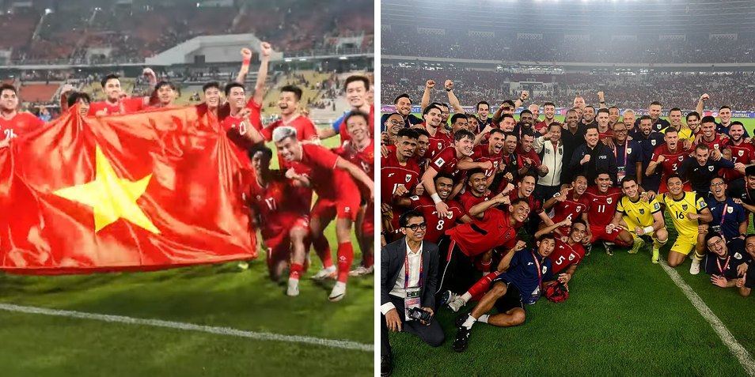

足球

辽宁女足提前一轮首夺中国女超联赛冠军
在沈阳主场1比1战平北京队后锁定冠军，一年前辽宁队正是在最后一轮输给同一对手而丢冠。
英格兰十人作战 3比2客胜西班牙 力压对手获欧国联小组第一
凯恩、孔萨和本·怀特先后破门，埃利奥特·安德森随后被罚下，英格兰顶住反扑，终结西班牙43场不败。

速滑世界杯北京站：中国队斩获四金 宁忠岩、廉子文、高亭宇先后夺冠
宁忠岩以打破场地纪录的成绩赢得男子1000米，并在1500米再夺一金；廉子文和高亭宇在“冰丝带”各赢一场500米。

日本队补时绝杀 在新加坡3比2击败巴西
维尼修斯梅开二度帮助巴西扳平后，坂元达裕第91分钟打入制胜球；安切洛蒂和拉菲尼亚被罚下。

越南U23战平卡塔尔 以不败战绩夺得嘉莱VTV杯冠军
阮明心在波来古下半场开场不久扳平比分，为东道主拿到夺冠所需的一分。

印度U17队12比0大胜关岛 升至亚洲杯预选赛小组第一
队长达拉尔穆恩·冈特在吉隆坡上半场上演帽子戏法；印度下一场对阵同积6分的巴勒斯坦。

曼联官宣波切蒂诺出任主帅 此前已解雇卡里克
这位前热刺和切尔西主帅签约至2029年，将在完成美国队的执教任务后于11月18日上任。

替补宝龙建功 越南U23击败新加坡 距VTV杯冠军仅一步之遥
越南队在波来古1比0取胜，取得两连胜，周六只需战平卡塔尔即可夺冠。

皮奥·埃斯波西托梅开二度 意大利3比1逆转法国 齐达内迎来执教首败
意大利在圣西罗球场逆转取胜，凭借相互交锋成绩升至欧国联A1组榜首，小组赛还剩最后一轮。

执教仅16场，水晶宫官宣解雇皮埃尔·萨热
目前球队在英超积分榜垫底，俱乐部正与托马斯·弗兰克进行深入谈判。

甘特上演帽子戏法 印度U17逆转4比2击败新加坡
在吉隆坡进行的2027年U17亚洲杯预选赛E组首轮中，印度队长连进三球，带领球队逆转取胜。

戈洛温与乌梅亚罗夫无缘俄罗斯队11月热身赛
主帅瓦列里·卡尔平确认伤病隐患，国家队目前正在塔什干备战即将到来的友谊赛。

藤野青叶梅开二度导演逆转！曼城客场4-1大胜国米斩获欧冠首胜
安德烈·耶格勒茨在多名主力轮休的情况下客场破局，逆转击溃此前意甲零封的国米女足。

卡里克下课已成定局？曼联火速敲定波切蒂诺接掌帅印
红魔深陷英超降级区排在第18位，俱乐部高层已正式提议换帅。

东南亚足球十年：领先者靠什么崛起？落后者被什么拖住？
基于11支国家队、7个联赛及其俱乐部的数据：泰国、越南和印度尼西亚为何领先，新加坡和马来西亚处在什么位置，以及包括柬埔寨在内的每个国家必须解决的瓶颈。

巴西队抵达新加坡，年内最后两场比赛将对阵日本和新加坡
安切洛蒂率领的年轻阵容将在新加坡国家体育场参加“加冷足球系列赛”的两场友谊赛，11月14日首战日本，重演世界杯32强之战。

新西兰零封萨摩亚杀入女篮世界杯决赛，瓦卡上演帽子戏法
斯泰西·瓦卡独中三元，新西兰女队在纽卡斯尔以32-0大胜萨摩亚，强势锁定决赛席位。

17分钟连进四球：巴黎圣日耳曼6比0横扫比利亚雷亚尔，欧冠夺冠热门拉开差距
巴黎圣日耳曼和皇家马德里是仅有的两支四战全胜的球队，阿森纳、科莫和巴塞罗那紧随其后。
马晓旭再创历史：中国U-17女足如何闯入世界杯八强
在执教的第一年里，这位前“双料金球奖”得主率队击败了美国和法国，虽在对阵巴西时于第87分钟遗憾落败，但仍赢得了国际足联的赞誉。

库伊特的“奇迹”：费内巴切两度落后，3比2逆转利物浦
前利物浦前锋迪尔克·库伊特出任临时主帅仅第二周，就看着韦达特·穆里奇在伊斯坦布尔头球绝杀他的老东家。

朗斯 1-9 科莫：欧冠新军追平赛事历史最大分差纪录
在队史首个欧冠赛季中，科莫客场狂轰九球，杜维卡斯上演帽子戏法，尼科·帕斯奉献两次助攻，积分榜飙升至第四位。

柬埔寨俱乐部惊艳亚洲：金边皇冠与柴桢闪耀亚冠二级联赛
战罢四轮，两支柬埔寨球队双双占据出线区，一路客场击败韩新球队、逼平上海申花，着实令人刮目相看。

C罗告别葡萄牙国家队：7号球衣的传奇谢幕
在23年职业生涯、146粒进球和一座欧洲杯冠军奖杯之后，41岁的C罗选择退出国际赛场，为这一篇章画上句号。

日本足协名誉主席田嶋幸三将挑战因凡蒂诺，竞选国际足联主席
这位日本足协前主席、现任名誉主席表示，希望把日本足球“真诚、正直和高尚的道德标准”带给世界足坛。